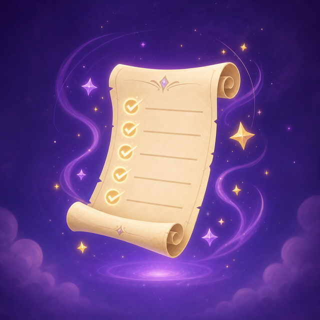

فارغ — المهام

لا توجد مهام بعد. أضف مهمتك الأولى.
فارغ — المال
لا توجد حركات مالية بعد.
تحميل
خطأ
تعذّر تحميل البيانات
تحقق من الاتصال ثم أعد المحاولة. بياناتك المحلية سليمة.
بدون إنترنت
أنت بدون اتصال. نعرض آخر نسخة محفوظة.
بقالة الأسبوع
محفوظة محلياً · ١٨ نوفمبر
-286
خط 130%
استخدم مبدّل الخط في الأعلى. كل الصفوف مرنة، ولا يُقص النص.
نص طويل لاختبار التكبير: مراجعة خطة الأسبوع وتحديد الأولويات